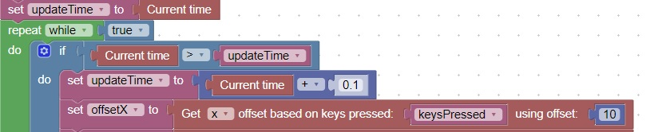

<h1>Timer Concept</h1>
A timer schedules code to run at a certain rate<br>
The current time block returns a value of the current clock in seconds<br>
This code will execute a block of code every 100 milliseconds (10 times a second).<br>
<br>
<hr>
<center></center>